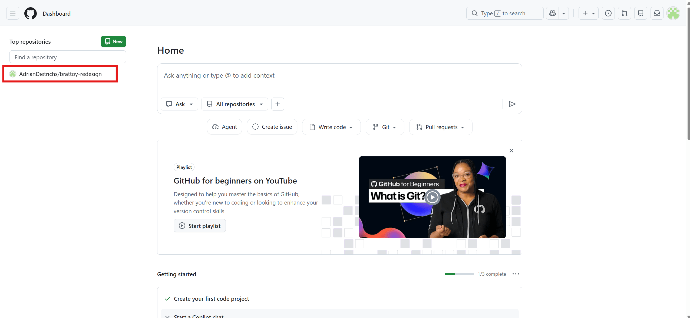
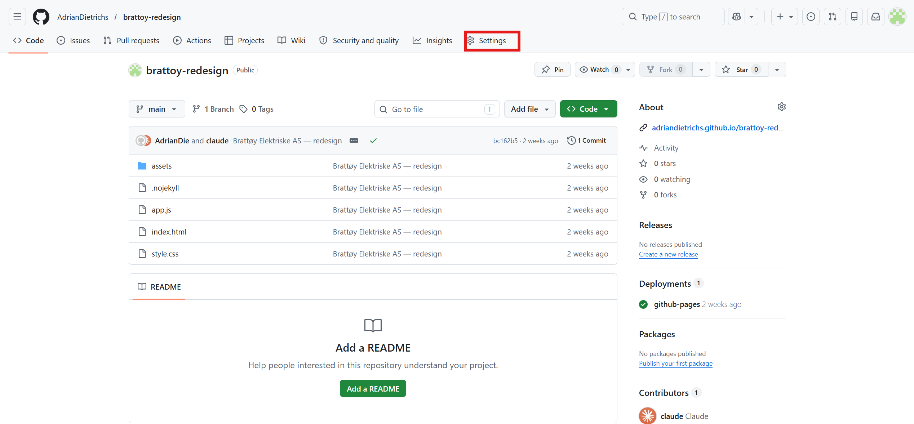
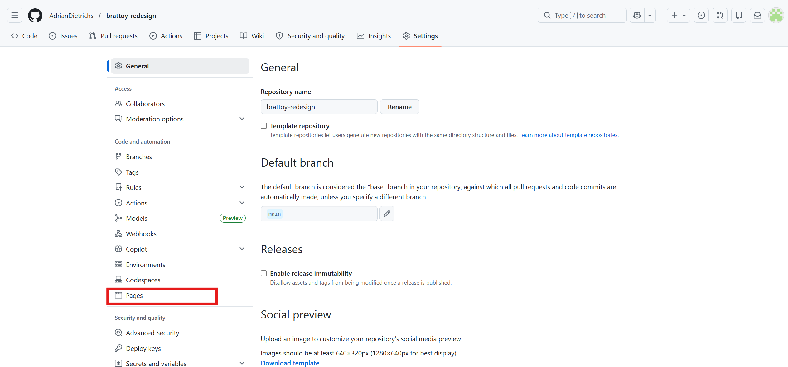
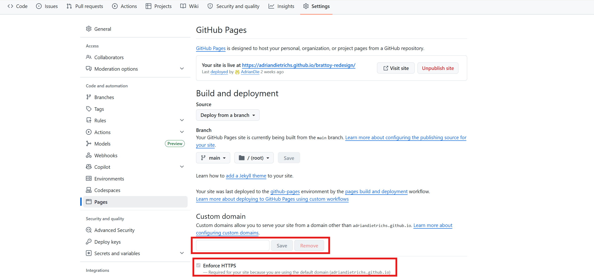

Forutsetning: Denne modulen forutsetter at du har akseptert overføringen av nettsiden i GitHub. Du fikk en e-post fra GitHub med tittelen «Accept repository transfer» — klikk lenken og godkjenn før du fortsetter her. Hvis du ikke har fått den ennå, vent til Adrian har sendt den.
Tips: Denne modulen inneholder noen tekniske steg. Bruk gjerne en AI-assistent som Google AI Studio underveis for å forsikre deg om at alt gjøres riktig — i steg 3 finner du en ferdig tekst du kan lime inn for å få hjelp.
Hvilken løsning er nettsiden din på?
Usikker? Sjekk når du fikk velkomstmailen for kurset. Fikk du nettsiden din etter 15. juli 2026, velg Cloudflare Pages. Stegene under bytter seg ut etter hva du velger.
Nå skal vi gjøre slik at når noen søker opp dittfirma.no, kommer de rett inn på den nye nettsiden — den som ligger på den kostnadsfrie løsningen vi satte opp i forrige modul.
Hva betyr det å «koble domenet»?
Nettsiden din ligger allerede klar på en midlertidig adresse (noe som brukernavn.github.io eller ditt-prosjekt.pages.dev). For at folk skal finne siden på din vanlige nettadresse — for eksempel dittfirma.no — må du fortelle internett at domenet ditt nå skal vise den nye nettsiden.
Det gjør du ved å legge inn noen DNS-innstillinger hos domeneleverandøren din. DNS er internettets adressebok — du oppdaterer hvilken adresse boken peker til, som å endre destinasjonen i en GPS.
Dette krever innlogging hos din domeneleverandør. Av sikkerhetsmessige årsaker ber vi aldri om kundens passord, og vi har derfor ikke tilgang til å gjøre dette for deg.
I tillegg er et av hovedmålene med dette kurset at du eier og har kontroll over alt selv. Når du forstår hvordan du styrer ditt eget domene, er du ikke lenger avhengig av dyre mellomledd. Innstillingene du legger inn nå er de samme uansett — og du trenger aldri gjøre det igjen med mindre du bytter leverandør.
Det du skal gjøre — oversikt
Det er fire steg:
- Registrer domenet i GitHub — fortell GitHub hvilket domene som hører til nettsiden
- Finn og logg inn hos domeneleverandøren — finn ut hvem som styrer domenet ditt, og åpne DNS-innstillingene
- Legg inn DNS-postene — bruk AI-assistent (anbefalt) eller gjør det manuelt
- Vent, sjekk og slå på HTTPS — bekreft at alt fungerer
Hvorfor denne rekkefølgen? GitHub anbefaler at du registrerer domenet hos dem før du peker DNS-en dit. Gjør du det motsatt, risikerer du i teorien at noen andre kobler seg på domenet ditt i mellomtiden. Det er lite sannsynlig, men det koster ingenting å gjøre det i riktig rekkefølge.
Slik henger det sammen
Steg 1: Registrer domenet i GitHub
Først forteller du GitHub hvilket domene som hører til nettsiden din. Det gjør at GitHub vet at dittfirma.no skal vise akkurat ditt repo og ingen annens.
Gå til repoet ditt på GitHub
Logg inn på github.com. Klikk på repoet (mappen) med nettsiden din — du finner det på forsiden etter innlogging.

Åpne innstillingene
Klikk på fanen Settings i menyen øverst i repoet (den ligger helt til høyre i fanerekken, ved siden av «Insights»).

Velg Pages
I menyen til venstre, scroll ned til seksjonen «Code and automation» og klikk på Pages.

Skriv inn domenet ditt
Under Custom domain, skriv inn domenenavnet ditt — for eksempel dittfirma.no — og klikk Save.
GitHub oppretter automatisk en fil som heter CNAME i repoet ditt. Det er denne filen som kobler domenet til nettsiden. Du vil se en gul melding som sier «DNS check in progress» — det er forventet, og den forsvinner etter steg 3.

Steg 2: Finn og logg inn hos domeneleverandøren
Nå skal du logge inn hos domeneleverandøren din og finne DNS-innstillingene.
Domeneleverandøren er selskapet du kjøpte nettadressen din hos — for eksempel Domeneshop, Webhuset, One.com, Namecheap eller GoDaddy. Det er her du logger inn for å styre hvor domenet ditt peker.
Vet du ikke hvor domenet ditt er registrert?
Ingen grunn til bekymring — det er enkelt å finne ut:
Søk opp domenet ditt
Gå til lookup.icann.org og skriv inn domenet ditt (for eksempel dittfirma.no). Trykk «Lookup». Dette fungerer for alle domener — både .no, .com og andre.
Finn registraren
Scroll ned til seksjonen «Registrar Information». Under «Name» ser du hvem leverandøren din er — for eksempel «WEBHUSET AS» eller «DOMENESHOP AS». Det er hos dem du skal logge inn.
Logg inn og finn DNS-innstillingene
Gå til nettsiden til leverandøren din, logg inn, og finn DNS-innstillingene. Klikk på leverandøren din under for å se nøyaktig hvordan:
Bruk «Glemt passord»-funksjonen — det er helt normalt. Vet du ikke hvilken e-post du brukte? Søk i innboksen din etter navnet på leverandøren (f.eks. «Domeneshop» eller «Webhuset»). Du har sannsynligvis fått kvitteringer eller fornyelsespåminnelser fra dem. Du kan også kontakte leverandørens kundeservice direkte.
Domeneshop
- Gå til domeneshop.no/login og logg inn
- Klikk på «Mine domener»
- Klikk på domenet ditt (f.eks.
dittfirma.no) - Klikk på fanen «DNS-pekere» øverst — her skal du legge inn de nye postene
Se også Domeneshop sin egen veiledning
Webhuset
- Gå til Webhuset sitt kundesenter og logg inn
- Klikk «Domene» → velg domenet ditt
- Klikk «DNS» → «DNS-oppføringer» — her skal du legge inn de nye postene
Se også Webhuset sin egen veiledning
One.com
- Gå til one.com/admin og logg inn
- Velg riktig domene i nedtrekkslisten øverst til venstre (under «Domenenavn»)
- Klikk på «Domene» i venstremenyen
- Klikk på «DNS-innstillinger» — her skal du legge inn de nye postene
Se også One.com sin egen veiledning
Namecheap
- Gå til namecheap.com og logg inn
- Klikk på «Domain List» i venstremenyen
- Klikk «Manage» ved siden av domenet ditt
- Klikk på fanen «Advanced DNS» — her skal du legge inn de nye postene
Se også Namecheap sin egen veiledning
GoDaddy
- Gå til godaddy.com og logg inn
- Gå til «Mine produkter» og finn domenet ditt
- Klikk «DNS» eller «Administrer DNS» — her skal du legge inn de nye postene
Se også GoDaddy sin egen veiledning
Steg 3: Legg inn DNS-postene
Nå som du har DNS-innstillingene åpne hos leverandøren din, er det på tide å legge inn de riktige postene. Du har to valg:
Vi anbefaler at du bruker AI-assistenten under i stedet for å gjøre det manuelt. Den guider deg gjennom hvert steg, tilpasser seg din leverandør, og kontrollerer at alt er riktig til slutt — slik at du slipper å lure på om du har gjort noe feil.
Alternativ A: Bruk AI-assistent (anbefalt)
Kopier teksten under og lim inn i Google AI Studio (eller en annen AI-assistent som ChatGPT eller Claude):
Når AI-assistenten sier at alt ser riktig ut, gå videre til steg 4.
Alternativ B: Gjør det manuelt
Foretrekker du å gjøre det selv? Klikk under for den fullstendige oversikten.
Steg 4: Vent, sjekk og slå på HTTPS
DNS-endringer kan ta opptil 24 timer å spre seg rundt på internett, men som regel fungerer det innen noen minutter. Åpne domenet ditt i en nettleser og se om den nye nettsiden dukker opp.
Når nettsiden viser seg:
- Gå tilbake til GitHub → Settings → Pages
- Huk av for Enforce HTTPS — da får nettsiden hengelåsen i nettleseren. Det er gratis.
Denne avhukingsboksen kan være grå akkurat nå — det er normalt. Den blir klikkbar etter at DNS-endringene har spredd seg, som regel innen noen minutter.
Ferdig! Når domenet viser den nye nettsiden med hengelås, er koblingen på plass. Du trenger aldri gjøre dette igjen — med mindre du en dag bytter til en helt annen hostingleverandør.
Slik setter du opp Cloudflare Pages
Cloudflare Pages er den nyere løsningen vi bruker for nettsider. Her setter du opp hostingen på din egen gratis Cloudflare-konto — da eier du alt selv, uten noe mellomledd. Det høres teknisk ut, men det er noen få klikk, og du gjør det bare denne ene gangen. I det daglige er alt som før: Claude lagrer, og siden publiseres av seg selv.
Forutsetning: du må ha fått nettside-repoet overført til din egen GitHub-konto først (det gjorde du i modulen om overgangen). Cloudflare kobler seg nemlig til ditt repo — så gjør dette etter at overføringen er ferdig, ikke før.
Slik henger det sammen på Cloudflare Pages
Opprett en gratis Cloudflare-konto
Gå til dash.cloudflare.com/sign-up og lag en konto med e-post og passord. Det er gratis, krever ikke kredittkort, og tar et par minutter. Har du allerede en konto, logger du bare inn.
Koble GitHub-repoet ditt til Cloudflare Pages
Dette er selve oppsettet — du gjør det bare denne ene gangen. I menyen til venstre: «Workers & Pages» → «Create» → fanen «Pages» → «Connect to Git». Godkjenn at Cloudflare får se GitHub-kontoen din, og velg repoet med nettsiden din i listen.
På siste side spør Cloudflare om «build-innstillinger». Nettsiden din er ferdige filer (ingen bygging), så du lar dem stå slik:
- Framework preset: None
- Build command: (la stå tom)
- Build output directory:
/
Klikk «Save and Deploy». Cloudflare henter filene og legger nettsiden ut på en midlertidig adresse — noe som ditt-prosjekt.pages.dev. Åpne den adressen: ser du nettsiden din der, fungerer hostingen. Nå gjenstår bare å koble ditt eget domene.
Velg ditt eget repo, la build-feltene stå tomme, og klikk «Begin setup» / «Save and Deploy».
Gå til «Custom domains» og legg inn domenet
Øverst i prosjektet klikker du på fanen «Custom domains». Klikk «Set up a custom domain», skriv inn domenet ditt — dittfirma.no — og trykk «Continue». Gjenta gjerne for www.dittfirma.no etterpå.
Når statusen blir grønn og sier «Active», er domenet koblet.
Følg det Cloudflare viser deg
Nå sjekker Cloudflare hvor domenet ditt styres fra, og gjør én av to ting:
Automatisk: Hvis domenet ditt allerede administreres av Cloudflare, ordner Cloudflare alt selv — du trenger ikke gjøre noe mer. Status blir grønn av seg selv.
Én post å legge inn: Hvis domenet ditt fortsatt ligger hos en vanlig leverandør (Domeneshop, One.com osv.), viser Cloudflare deg nøyaktig hvilken post du skal legge inn der — som regel én CNAME. Logg inn hos leverandøren din (samme sted som i steg 2 lenger opp), og legg inn akkurat den posten Cloudflare oppgir.
Ikke rør e-post-postene. Akkurat som på GitHub-løsningen: la MX, TXT og NS stå i fred — de styrer e-posten din. Er du usikker, lim inn det Cloudflare viser til Google AI Studio og be om en trygg steg-for-steg-veiledning før du endrer noe.
Vent til det blir «Active»
Det tar som regel noen minutter (opptil noen timer). Når raden for domenet ditt viser grønn «Active», er koblingen på plass. HTTPS og hengelåsen ordnes automatisk på Cloudflare — du trenger ingen avhukingsboks slik som på GitHub.
Ferdig! Når dittfirma.no viser nettsiden din med hengelås, er domenet koblet til Cloudflare Pages. Du trenger aldri gjøre dette igjen.
Trøbbel?
Hvis domenet ikke viser den nye nettsiden etter noen timer:
- Dobbeltsjekk DNS-postene — en liten skrivefeil i IP-adressen er nok til at det ikke fungerer.
- Sjekk at det ikke ligger gamle A-poster igjen — de kan kræsje med de nye. Du skal bare ha de fire GitHub-adressene, ingen andre A-poster på
@. - Sjekk at domenenavnet i GitHub er stavet nøyaktig likt som domenet du eier (inkludert
.nopå slutten). - Tøm nettleserens hurtigminne — trykk Ctrl+Shift+R (Windows) eller Cmd+Shift+R (Mac) for å laste siden uten cache.
- Kontakt oss på adrian@dmarketing.no — vi kan sjekke om DNS-innstillingene dine er riktige og guide deg videre.
Ferdig! Du har nå pekt domenet ditt til nettsiden på den kostnadsfrie løsningen. Søk opp dittfirma.no i nettleseren og se selv — det er din nye nettside.
- DNS er internettets adressebok — den peker domenet ditt til GitHub sine servere
- A-postene (IP-adressene) er faste og identiske for alle GitHub Pages-sider
- CNAME-filen i GitHub-repoet er limet som kobler domenet til akkurat din nettside